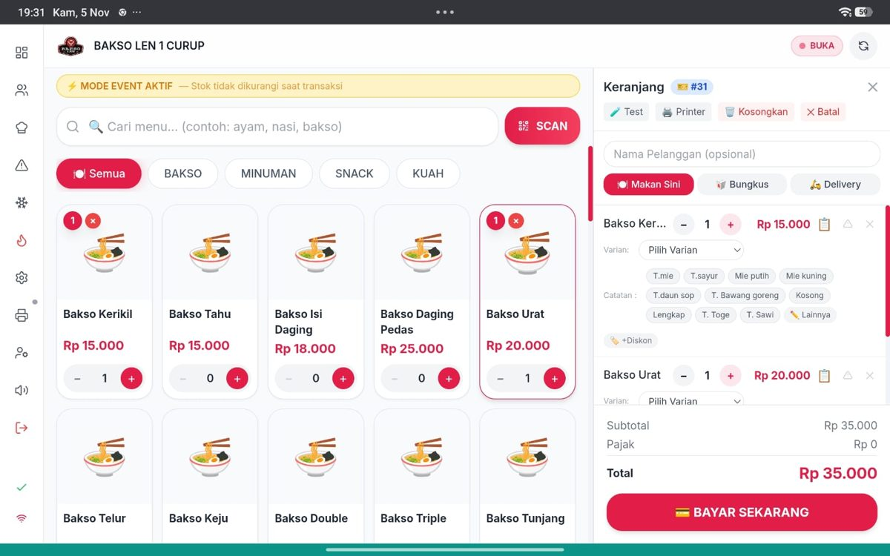
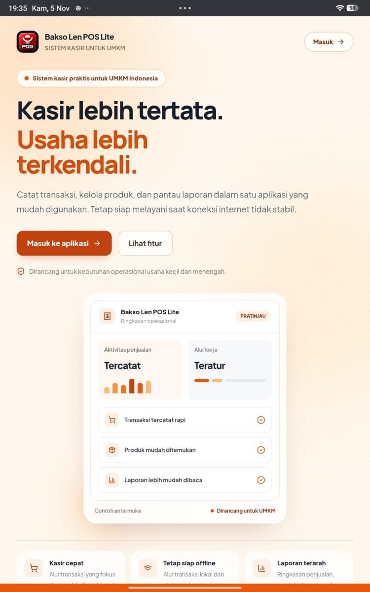
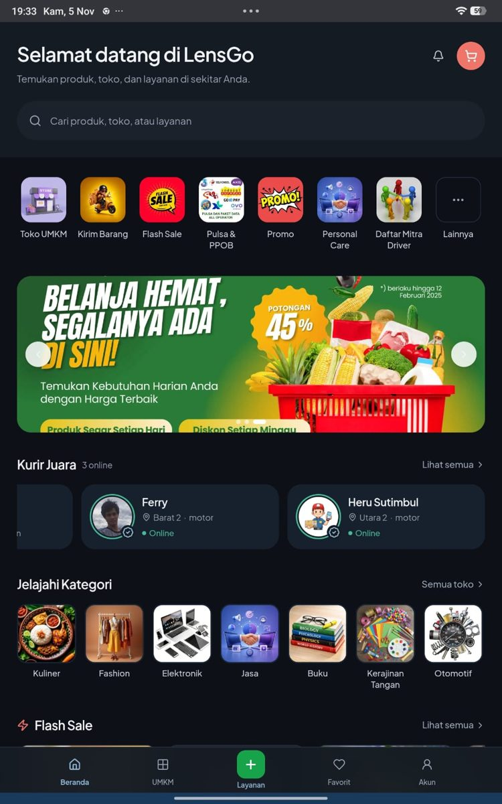
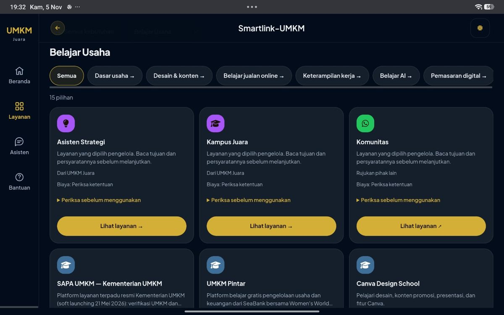
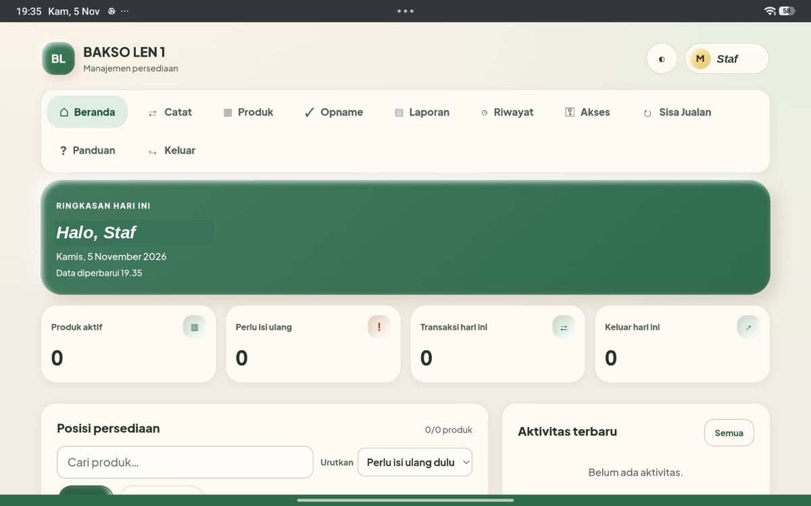

 01 / Kasir UMKM Juara POSDipakai staf, ± 6 bulan Masalah. Kasir di cabang Curup mencatat transaksi di tengah pekerjaan harian, jadi alurnya harus ringkas. Yang saya buat. POS untuk alur transaksi kasir: memilih menu, varian dan catatan pesanan, makan di tempat, bungkus atau antar, lalu pembayaran. Dirancang multi-tenant seperti layanan SaaS, jadi satu aplikasi bisa melayani beberapa usaha dengan data yang terpisah. Batasnya. Fiturnya berlebihan untuk kebutuhan kasir, dan itu pelajaran utamanya. Karena multi-tenant, saya sedang mengaudit menyeluruh agar data satu usaha tidak bocor ke usaha lain. Audit itu belum selesai, dan uji pemulihan data serta hak akses juga belum saya lakukan. Belum pernah ada laporan kendala dari staf, hanya adaptasi di awal. Buka proyek ↗
 02 / Kasir sederhana POS Sederhana Bakso LenPercobaan Masalah. Usaha kuliner membutuhkan kasir yang ringkas dan tetap bisa dipakai saat koneksi internet tidak stabil. Yang saya buat. Kasir dengan pendekatan offline-first: dirancang supaya tetap jalan ketika internet putus, dengan data usaha yang juga dipisahkan per pengguna (multi-tenant). Pernah saya buat sekaligus sebagai aplikasi desktop dan PWA di browser. Versi desktopnya sudah saya buang. Batasnya. Terlalu banyak rekayasa untuk kebutuhan sederhana. Saya memangkas 86 berkas dan membuang seluruh folder aplikasi desktop, dan sekarang saya sebut hampir aman, belum aman. Audit pemisahan data antar pengguna masih berjalan, dan ketahanan tanpa koneksi belum saya uji pada semua keadaan. Statusnya tidak sama dengan POS UMKM Juara yang dipakai staf Curup. Buka proyek ↗
 03 / Platform LensGo · Kurir JuaraPercobaan, belum berjalan Masalah. Di Lubuklinggau sudah ada kurir lokal yang mengantar pesanan dengan cara manual. Saya ingin tahu apakah pola itu bisa dibuat digital tanpa pembayaran online. Yang saya buat. Marketplace lokal plus pengiriman lokal, awalnya bernama Kurir Juara. Pembayarannya sepenuhnya offline: kurir mengambil pesanan di merchant dan membayarnya lebih dulu, mengantar ke pembeli, lalu pembeli membayar nilai pesanan ditambah ongkos kirim sesuai yang tertera saat checkout. Batasnya. Awalnya ingin saya presentasikan ke pemerintah, tetapi sistemnya kompleks dan saya belum percaya diri dengan kesempurnaannya. Rencananya pilot terbatas: Bakso Len sebagai merchant dan satu atau dua kurir. Sampai itu berjalan, ini laboratorium belajar saya, bukan layanan pengantaran yang berjalan. Data dan nama di tangkapan layar adalah contoh. Buka proyek ↗
 04 / Ruang informasi SmartLink UMKMBerfungsi, nirlaba Masalah. Banyak solusi untuk pelaku UMKM sebenarnya sudah ada di internet, tetapi tersebar dan sulit ditemukan oleh yang belum terbiasa. Yang saya buat. Portal bernama Portal UMKM Juara. Isinya hasil kurasi saya atas solusi yang sudah ada, dirangkum dalam satu situs dengan pencarian dan kategori kebutuhan usaha. Di halamannya saya bedakan mana yang berasal dari UMKM Juara dan mana rujukan pihak lain. Batasnya. Fungsinya sudah berjalan baik, tetapi saat saya presentasikan ke pemerintah, tanggapannya dingin. Karena itu saya memilih menjadikannya layanan publik nirlaba. Yang belum terjawab: bagaimana menjaga situs ini tetap online tanpa biaya operasional. Manfaatnya bagi pemakai belum saya ukur. Buka proyek ↗
 05 / Stok Bakso Len Aplikasi Manajemen StokPemakaian pribadi, ± 1 bulan Masalah. Persediaan usaha perlu tercatat dengan cara yang sesederhana mungkin. Yang saya buat. Aplikasi stok dengan tampilan di GitHub dan Vercel, dan data di Google Sheets lewat Google Apps Script. Ini aplikasi web pertama saya yang basis datanya Google Sheets. Awalnya saya bangun seluruhnya di dalam Apps Script, tetapi tampilan di HP tidak memenuhi layar karena bingkai (iframe), jadi tampilannya saya pindahkan. Batasnya. Saya pakai sendiri dan tidak saya bagikan, jadi tautannya tidak dipasang di sini. Dibuat sesederhana mungkin dan belum ada laporan kendala. Keamanan alamat Apps Script, uji pemulihan data, dan kinerja pada data yang sangat besar belum saya uji. Tangkapan layar menampilkan akun uji dengan data masih kosong, dan nama pengguna saya samarkan.
01Mulai dari kejadian nyataSaya mulai dari hal yang benar-benar dialami di warung: kasir yang kerepotan mencatat saat pembeli antre, atau stok yang selisih dengan catatan. Daftar fitur yang terdengar bagus bisa menunggu, karena fitur yang tidak berawal dari kejadian nyata biasanya berakhir jadi beban.
02Tulis dulu kebutuhannyaSiapa pemakainya, alur utamanya, data apa yang disimpan, dan apa yang terjadi kalau gagal. Satu halaman cukup. Tulisan inilah yang kemudian saya jadikan pegangan di berkas agen.md, supaya AI tidak berimajinasi sendiri.
03Ubah sedikit, uji, baru lanjutSatu perubahan kecil mudah dibaca dan mudah dibatalkan. Kalau saya meminta banyak hal sekaligus dan hasilnya rusak, saya tidak tahu bagian mana penyebabnya. Pelajaran ini mahal harganya, salah satunya lewat 86 berkas yang akhirnya harus saya pangkas.
04Curigai hasilnyaSaya cocokkan dengan dokumentasi, membaca perubahannya sebisa saya, lalu mencoba alur yang berhasil dan yang gagal. Layar yang rapi belum tentu berarti datanya tersimpan, dan jawaban AI yang meyakinkan belum tentu benar.
05Siapkan jalan kembaliTitik aman sebelum perubahan besar, dan cadangan data. Cadangan yang belum pernah dicoba dipulihkan baru sebatas anggapan, dan uji pemulihan itu masih menjadi utang saya.
06Berhenti saat risikonya terlalu besarKalau menyangkut uang, data sensitif, hak akses, atau banyak pengguna yang tidak bisa saya periksa sendiri, saya berhenti dan mencari programmer profesional. Berhenti juga bagian dari bekerja.
Cara pandang 01Tukang bakso pakai AI, kenapa harus malu?Cara saya bekerja dengan AI, apa adanya, dan bagian yang tidak saya serahkan kepadanya.Baca selengkapnya
Cara pandang 02Apa arti vibe coding bagi sayaMenjelaskan masalah dengan bahasa warung, lalu memeriksa hasilnya dengan teliti.Baca selengkapnya
Cara pandang 03Aplikasi web atau aplikasi mobile?Lima hal yang saya timbang sebelum memilih bentuk aplikasi.Baca selengkapnya
Cara pandang 04Takut klik tautan? Wajar.Apa yang bisa dan tidak bisa saya jamin tentang proyek-proyek di halaman ini.Baca selengkapnya
Kejadian 05Saat POS menjadi terlalu rumitDua POS, dua cara menjadi terlalu rumit, dan 86 berkas yang harus dipangkas.Baca selengkapnya
Kejadian 06Ruang kosong di tampilan Google Apps ScriptPenjelasan yang masuk akal ternyata baru bermasalah saat dibuka di layar.Baca selengkapnya
Kejadian 07Saat pemeriksaan otomatis menghabiskan kuotaEmpat atau lima berkas otomatisasi dari AI, dan satu pertanyaan yang sekarang selalu saya ajukan.Baca selengkapnya
Pelajaran 08Pesan “berhasil” belum tentu berarti tersimpanCara saya mengikuti perjalanan data, dari layar sampai ke tempat penyimpanan.Baca selengkapnya
Pelajaran 09Fakta, dugaan, dan belum diujiTiga kolom yang menjaga saya dari mengubah harapan menjadi klaim, dan isi kolom ketiga milik saya.Baca selengkapnya
Pelajaran 10Kapan saya perlu meminta bantuan profesional?Batas yang saya pasang untuk diri sendiri, dan bagaimana aplikasi kasir saya sendiri masuk ke dalamnya.Baca selengkapnya
Buku gratis · Edisi 1 Buku Pintar Vibe Coder Intisari jurnal belajar saya selama membangun aplikasi dengan AI: cara berpikir dan batas AI, cara memeriksa hasilnya, keamanan dasar, cadangan, biaya, sampai daftar hal yang belum saya uji. Edisi pertama ini belum final dan akan saya revisi seiring temuan baru. Buka halaman buku, unduh PDF atau EPUB ↗
Belajar bersama Komunitas Ngulik Digital Inisiatif untuk belajar alat digital dari pengalaman: berbagi temuan dan kesalahan, dan saling mengoreksi. Kalau Anda ingin bergabung atau punya koreksi untuk apa yang saya tulis, hubungi saya lewat email di bagian kontak.
Jasa video dan foto AI Linggau AI Studio Merek untuk jasa video iklan pendek dan foto produk berbasis AI bagi pelaku usaha di sekitar Lubuklinggau. Saya merintisnya tahun lalu dengan harga perkenalan Rp50.000 untuk video 20 sampai 30 detik. Alat yang saya pakai tidak saya buka. Sejak mengenal vibe coding, perhatian saya lebih banyak ke pembuatan aplikasi.
Tukang bakso pakai AI, kenapa harus malu? Cara saya bekerja dengan AI, apa adanya. Saya mulai dari nol. Tidak ada latar belakang pemrograman, dan waktu pertama kali membuka percakapan dengan AI, banyak istilah yang sama sekali tidak saya mengerti. Jadi yang saya lakukan sederhana: bertanya. Apa maksudnya, kenapa harus begitu, apa bedanya dengan yang satunya lagi. Saya bertanya seperti kepada teman kerja yang sabar, dan kalau jawabannya belum nyambung, saya bertanya lagi sampai nyambung. Saya juga tidak punya rumus prompt yang rumit. Saya menulis apa yang saya butuhkan, atau apa yang sedang rusak di layar, dengan bahasa sehari-hari. Sejak awal saya memakai Google AI Studio dan Gemini Canvas, lalu belakangan Gemini dan Claude jadi teman diskusi utama. Kebiasaan itu bertahan sampai sekarang. Karena cara menulis saya tidak baku, saya tidak mau bergantung pada prompt saja. Di setiap proyek saya taruh sebuah berkas bernama agen.md. Isinya konteks proyek, tujuan aplikasi, aturan kerja, keputusan penting yang sudah diambil, dan hal-hal yang tidak boleh diubah sembarangan. Berkas ini saya susun bersama Claude. Gunanya supaya AI yang membantu saya punya pegangan yang sama dari awal sampai akhir, termasuk ketika saya membuka percakapan baru dan AI-nya sudah lupa semuanya. Tanpa berkas itu, AI cenderung menebak, dan tebakannya kadang menghapus sesuatu yang penting. Soal malu, saya tidak merasa perlu. Yang perlu saya jaga bukan gengsi, melainkan bagian yang memang tidak bisa diserahkan. Aturan usahanya saya yang menentukan, karena AI tidak pernah berdiri di depan kasir saat warung ramai. Perubahan kode saya yang membaca, sebisa saya. Hasilnya saya yang mencoba di layar yang sebenarnya. Dan kalau ada yang salah, saya yang menjawab kepada staf maupun pembeli. Bagian yang belum saya mengerti, saya akui belum mengerti. Itu sebabnya di halaman ini tiap proyek punya keterangan batas dan status. Saya lebih nyaman dibilang masih belajar daripada dibilang ahli lalu ketahuan salah.
Apa arti vibe coding bagi saya Menjelaskan masalah dengan bahasa warung, memeriksa hasilnya dengan teliti. Istilah vibe coding sering dipahami sebagai “tinggal minta, jadi”. Bagi saya artinya lain. Saya menjelaskan masalah kepada AI, AI menulis sebagian besar draf kodenya, dan saya tetap memegang bagian yang tidak dimiliki AI. Bagian itu banyak sekali. AI tidak mengalami jam sibuk di warung, jadi aturan usaha harus datang dari saya: siapa boleh mengubah apa, apa yang terjadi kalau stok habis, kapan sebuah transaksi dianggap selesai, apa yang harus tetap bisa dipakai kalau internet putus. Kalau saya tidak menjelaskan hal-hal itu, AI akan mengisinya dengan asumsi yang masuk akal di atas kertas, tetapi belum tentu masuk akal di meja kasir. Saya mengerjakannya hampir tiap hari, delapan sampai sepuluh jam, sudah tujuh sampai delapan bulan. Dari situ lahir lima proyek yang saya kerjakan bergantian, karena kalau terlalu lama di satu proyek saya jenuh. Belum ada yang sempurna. Tetapi justru dari ketidaksempurnaan itu saya belajar paling banyak. Ada tiga kejadian yang membuat saya sangat berhati-hati. Di proyek POS, 86 berkas harus saya pangkas karena rekayasanya berlebihan. Di aplikasi stok, tampilan di Google Apps Script tidak memenuhi layar HP. Di satu proyek lain, pemeriksaan otomatis dari AI menghabiskan kuota layanan. Ketiganya terdengar masuk akal ketika dijelaskan, dan baru ketahuan masalahnya setelah dicoba. Ceritanya saya tulis terpisah di catatan lapangan lain. Karena itu cara kerja saya begini: meminta langkah kecil, membaca perubahannya, mencoba alur yang berhasil dan yang gagal, dan menyimpan titik aman sebelum perubahan besar. Kalau risikonya sudah melewati kemampuan saya memeriksa, misalnya menyangkut uang, data orang lain, atau banyak pengguna sekaligus, saya berhenti dan mencari programmer profesional. Bagi saya, tahu kapan harus berhenti sama pentingnya dengan tahu cara memulai.
Aplikasi web atau aplikasi mobile? Kenapa semua aplikasi saya berbentuk web, termasuk alasan yang kurang enak dibicarakan. Beberapa orang bertanya kenapa aplikasi saya berbentuk web, bukan aplikasi mobile yang dipasang dari Play Store. Pertanyaannya wajar, dan saya mau menjawab sejujurnya, termasuk bagian yang kurang enak. Alasan pertama praktis. Aplikasi web yang saya terbitkan lewat Vercel dibuka dari sebuah tautan. Kalau ada perbaikan, saya terbitkan versi barunya dan staf langsung memakai versi terbaru tanpa memasang ulang apa pun. Untuk usaha kecil yang perawatnya satu orang, itu keuntungan yang nyata. Staf tidak perlu belajar memperbarui aplikasi, dan saya tidak perlu mengejar satu per satu HP. Alasan kedua soal pilihan bentuk. Di web ada jalan tengah yang namanya PWA, yaitu situs yang bisa dipasang ke layar utama HP sehingga terasa seperti aplikasi. Itu cukup untuk kebutuhan kasir dan stok saya. Kekurangannya juga saya tahu: aplikasi web bergantung pada koneksi, dan aksesnya ke fitur perangkat lebih terbatas dibanding aplikasi bawaan. Soal koneksi itulah yang mendorong POS Sederhana Bakso Len saya rancang offline-first, supaya kasir tetap bisa bekerja kalau internet putus. Rancangannya sudah ada, tetapi saya belum menguji semua keadaan tanpa koneksi, jadi belum berani saya sebut terbukti. Alasan ketiga yang paling jujur: saya bekerja sendirian dan tidak punya dana. Untuk menerbitkan aplikasi mobile di Google Play lewat akun pengembang pribadi yang baru, saya perlu 12 orang penguji selama 14 hari. Saya tidak punya tim, tidak punya penguji sebanyak itu, dan tidak punya anggaran untuk mencarinya. Saya memanfaatkan layanan gratis untuk belajar dan berlatih, dan web adalah bentuk yang paling bisa saya jangkau dengan cara itu. Saya tidak mau pura-pura bahwa ini murni pilihan teknis. Apakah aplikasi mobile mungkin suatu hari saya buat? Mungkin, kalau kebutuhannya berubah dan ada yang membantu mengujinya. Untuk hari ini saya memilih bentuk yang paling bisa saya rawat sendiri dan saya periksa sendiri.
Takut klik tautan? Wajar. Apa yang bisa dan tidak bisa saya jamin tentang proyek di halaman ini. Halaman ini penuh tautan ke aplikasi yang saya terbitkan lewat Vercel. Kalau Anda ragu membukanya, itu sikap yang sehat. Penipuan lewat tautan memang banyak, dan saya sendiri tidak mau meminta orang percaya hanya karena ada tangkapan layar yang rapi. Yang bisa saya berikan: saya pemilik Bakso Len di Lubuklinggau dan Curup, sejak 2008. Satu aplikasi di sini, POS UMKM Juara, dipakai staf saya di Curup sekitar enam bulan. Satu lagi, aplikasi stok, saya pakai sendiri, dan tautannya sengaja tidak saya pasang. Sisanya masih percobaan atau portal informasi. Setiap kartu proyek menyebut statusnya apa adanya. Yang tidak bisa saya berikan adalah jaminan bahwa keamanannya sudah diaudit oleh ahli. Auditnya belum ada. Untuk dua POS saya, saya sedang memeriksa sendiri secara menyeluruh, terutama supaya data satu pengguna tidak bocor ke pengguna lain. Itu pekerjaan yang belum selesai, dan lebih baik saya katakan sekarang daripada Anda temukan sendiri nanti. Beberapa hal bisa Anda periksa sendiri sebelum membuka tautan mana pun, milik saya maupun milik orang lain. Pastikan alamatnya sama dengan yang tertulis di kartu proyek. Perhatikan apakah halamannya meminta kata sandi akun lain atau data pembayaran, karena itu tanda untuk berhenti. Dan jangan pernah memasang apa pun hanya karena sebuah halaman memintanya. Kalau Anda tetap ingin mencoba, jangan memasukkan data pribadi yang sensitif ke aplikasi mana pun yang belum Anda yakini, termasuk milik saya. Kalau ingin bertanya dulu, tulis saja ke email saya di bagian kontak.
Saat POS menjadi terlalu rumit Dua POS, dua kesalahan yang berbeda. Saya mengalami ini dua kali, di kedua POS yang saya buat, dan penyebabnya berbeda. UMKM Juara POS kelebihan fitur. Karena AI hampir selalu bisa membuatkan apa pun yang diminta, saya terlalu mudah berkata “tambahkan ini, tambahkan itu”. Setiap tambahan terdengar berguna ketika diminta. Baru belakangan saya sadar banyak di antaranya tidak dibutuhkan kasir. Kasir di Curup hanya perlu memilih menu, mengisi keranjang, dan menyelesaikan pembayaran dengan cepat sambil melayani pembeli. POS Sederhana Bakso Len kelebihan rekayasa. Pada satu masa, saya membuatnya sekaligus sebagai aplikasi desktop yang dipasang di komputer dan sebagai PWA yang dibuka di browser. Dua jalur berarti dua kali kerja, dua kali tempat untuk salah, dan dua kali celah keamanan. Saya melakukannya karena ambisi, padahal saya belum paham struktur aman sebuah aplikasi web. Saya orang awam yang ingin segera punya sesuatu yang terlihat lengkap. Ketika proyeknya saya tinjau ulang, 86 berkas saya pangkas dan seluruh folder aplikasi desktopnya saya buang. Pemangkasan memang tidak terasa seperti kemajuan: berkasnya berkurang dan tidak ada yang bisa dipamerkan. Tetapi aplikasi yang tersisa jauh lebih mudah saya jelaskan, lebih mudah saya perbaiki, dan jauh lebih mudah saya periksa keamanannya. Sekarang saya menyebutnya hampir aman, bukan aman. Masalah utamanya bukan di AI. Setiap fitur dan setiap jalur tambahan menambah data, aturan, layar, dan kemungkinan error, dan semuanya harus saya rawat sendiri. Tidak ada tim yang membagi beban itu. Tidak ada yang berkata “cukup”, kecuali saya sendiri. Sekarang ada tiga pertanyaan yang saya ajukan sebelum menerima tambahan dari AI. Pertama, siapa yang akan memakai ini dan kapan? Kalau jawabannya “mungkin suatu hari”, ia menunggu. Kedua, apa yang rusak kalau ini tidak ada? Kalau tidak ada yang rusak, itu keinginan, bukan kebutuhan. Ketiga, siapa yang merawatnya? Jawabannya selalu saya, jadi setiap tambahan harus sepadan dengan tenaga saya. Kalau saya sendiri sulit menjelaskan sebuah tambahan, itu tanda untuk berhenti.
Ruang kosong di tampilan Google Apps Script Masalah yang baru terlihat setelah dicoba di HP. Aplikasi stok saya semula saya bangun utuh di dalam Google Apps Script. Alasannya masuk akal: datanya sudah di Google Sheets, Apps Script gratis, dan semuanya ada dalam satu ekosistem. Penjelasan AI waktu itu juga meyakinkan, dan di atas kertas tidak ada yang janggal. Masalahnya baru terlihat ketika saya membukanya sendiri di HP. Google Apps Script menyajikan halaman web di dalam sebuah bingkai yang disebut iframe, dan akibatnya tampilan tidak memenuhi layar. Ada ruang kosong yang lebar, tampilan terasa tidak utuh, dan itu cukup mengganggu saya. Kelemahan seperti ini tidak akan pernah terlihat dari penjelasan, hanya dari layar yang sebenarnya. Solusinya saya memindahkan tampilan depan ke GitHub dan Vercel. Berkas tampilan tersimpan di GitHub, ditayangkan lewat Vercel, sementara data tetap di Google Sheets lewat Google Apps Script. Ini aplikasi web pertama saya yang basis datanya Google Sheets, dan baru sekitar sebulan saya pakai sendiri. Pola ini ternyata menjadi arah saya ke depan. Kalau suatu saat saya membantu UMKM, saya cenderung mengarahkan mereka ke ekosistem Google untuk datanya, karena sebagian besar sudah akrab dengan Sheets. Tampilannya tetap saya tayangkan lewat Vercel dan berkasnya tetap di GitHub, justru supaya masalah iframe tadi tidak terulang. Ada pertanyaan yang belum saya jawab tuntas pada pola ini: siapa saja yang bisa memanggil alamat Apps Script-nya? Dipakai sehari-hari tanpa kendala belum berarti aman, dan saya juga belum menguji aplikasi ini pada data yang sangat besar. Dua hal itu masih ada di daftar pekerjaan saya. Pelajarannya, tampilan yang rapi di satu layar belum tentu rapi di layar lain, dan saran yang masuk akal belum terbukti sebelum dicoba di perangkat yang benar-benar dipakai.
Saat pemeriksaan otomatis menghabiskan kuota Yang berjalan di belakang layar juga punya ongkos. Di salah satu proyek, AI membantu saya membuat sekitar empat atau lima berkas berformat .yml untuk GitHub Actions. Itu fitur GitHub untuk menjalankan pemeriksaan otomatis setiap kali ada perubahan atau penerbitan. Niatnya baik: supaya kode diperiksa tanpa saya harus melakukannya sendiri. Yang terjadi, semua pemeriksaan itu berjalan setiap kali aplikasi diterbitkan, sampai akhirnya kuota layanan pada saat itu habis. Jujur saja, waktu itu saya belum memahami rincian teknisnya. Saya menerima berkas-berkas itu karena AI yang membuatnya dan tampak profesional. Saya lalu meminta semua pemeriksaan itu dinonaktifkan, dan memperbaiki proyeknya sedikit demi sedikit. Setelah itu saya harus belajar dulu apa sebenarnya yang berjalan di belakang layar. Sekarang, sebelum menyetujui berkas otomatisasi dari AI, saya minta dijelaskan beberapa hal. Apa yang memicunya: setiap terbit, setiap perubahan, atau terjadwal? Berapa lama satu kali jalan? Apa yang terjadi ketika batasnya habis: berhenti, ditagih, atau diperlambat? Dan bisakah saya mematikannya dengan mudah kalau ternyata berlebihan? Pemeriksaan otomatis itu sendiri bukan hal buruk. Masalahnya ada pada saya yang menerima berkas tanpa tahu ongkosnya. Aturan dan kuota layanan juga bisa berubah dari waktu ke waktu, jadi pengalaman lama ini bukan patokan untuk kondisi sekarang. Yang saya bawa dari kejadian itu adalah kebiasaan bertanya, bukan angka.
Pesan “berhasil” belum tentu berarti tersimpan Cara saya mengikuti perjalanan data, dari layar sampai ke tempat penyimpanan. Satu pelajaran yang saya pegang erat: tulisan “Berhasil disimpan” di layar belum membuktikan apa-apa. Itu hanya berarti bagian tampilan merasa tugasnya selesai. Apakah data benar-benar sampai ke tempat penyimpanan, itu soal lain. Pada aplikasi kasir dan stok, perbedaan ini mahal. Kalau satu transaksi tampak berhasil tetapi tidak tersimpan, uang dan stok yang tercatat jadi tidak cocok dengan kenyataan, dan biasanya baru ketahuan berhari-hari kemudian ketika ada yang menghitung. Saat itu sudah sulit melacak sumbernya. Karena itu setiap kali ada perubahan pada cara data disimpan, saya menjalankan rutinitas pendek. Simpan satu data uji. Lihat langsung di tempat penyimpanan, misalnya di Google Sheets, apakah barisnya benar-benar muncul. Muat ulang halaman dan lihat apakah datanya masih ada. Lalu coba skenario gagalnya: isian dikosongkan, format salah, dan tombol simpan ditekan dua kali, karena orang yang sedang sibuk sering menekan dua kali. Rutinitas ini membosankan. Tetapi kebosanan itu murah dibanding satu catatan usaha yang salah. Kalau salah satu langkah saya lewati, saya tidak menulisnya sebagai berhasil. Saya menandainya belum diuji, dan membiarkannya tetap begitu sampai benar-benar saya uji. AI memang bisa menulis kode penyimpanan yang tampak benar, dan sering kali memang benar. Tetapi saya tidak punya cara membedakan yang “tampak benar” dari yang benar selain mencobanya sendiri. Memeriksa sampai ke tempat penyimpanan adalah satu-satunya cara yang saya punya.
Fakta, dugaan, dan belum diuji Tiga kolom yang menjaga saya dari mengubah harapan menjadi klaim. Ketika menulis tentang proyek sendiri, godaan terbesar adalah membuat semuanya terdengar lebih baik dari kenyataan. Supaya tidak jatuh ke situ, saya memisahkan tulisan saya ke tiga kolom: fakta, dugaan, dan belum diuji. Fakta adalah yang bisa saya amati sendiri. Staf kasir di Curup memakai POS UMKM Juara sekitar enam bulan, dan sejauh ini tidak ada laporan kendala selain masa adaptasi di awal. Aplikasi stok baru sekitar sebulan saya pakai sendiri. Itu saja. Saya tidak menambahkan kata “terbukti andal”, karena enam bulan tanpa laporan belum sama dengan terbukti. Dugaan adalah kemungkinan yang belum saya buktikan. Misalnya, aplikasi stok yang sederhana mungkin cukup untuk kebutuhan saya dan mungkin membuat pencatatan lebih akurat. Itu bisa benar. Tetapi baru sebulan, dan saya belum mengukurnya, jadi statusnya dugaan. Belum diuji adalah yang belum punya hasil pemeriksaan yang bisa saya tunjukkan. Untuk aplikasi saya, daftarnya cukup panjang: uji pemulihan cadangan, uji hak akses, kinerja pada data yang sangat besar, keamanan alamat Apps Script, dan audit pemisahan data antar pengguna pada kedua POS yang multi-tenant. Saya menuliskannya terang-terangan karena menyembunyikannya tidak membuat daftar itu hilang. Memisahkan ketiganya mencegah saya mengubah “aplikasinya dipakai” menjadi “aplikasinya pasti aman”. Dua kalimat itu terdengar mirip, tetapi isinya jauh berbeda. Aturannya: sebuah hal hanya boleh pindah dari kolom dugaan atau belum diuji ke kolom fakta kalau ada hasil yang bisa saya tunjukkan.
Kapan saya perlu meminta bantuan profesional? Batas yang saya pasang untuk diri sendiri. Saya bisa membangun banyak hal dengan bantuan AI, tetapi tidak semuanya pantas saya kerjakan sendirian. Jadi saya menetapkan tanda-tanda kapan saya harus berhenti dan mencari programmer atau ahli keamanan yang sungguhan. Tanda pertama: saya tidak tahu data apa yang berubah ketika sebuah fitur dijalankan. Kedua: saya tidak punya titik pemulihan, artinya kalau salah, tidak ada jalan kembali. Ketiga: saya tidak bisa membedakan akun uji dari akun nyata, sehingga uji coba bisa merusak data sungguhan. Keempat: saya merasa harus menerima jawaban AI karena saya tidak mampu memeriksanya. Satu saja dari keempatnya sudah cukup untuk menunda rilis. Dari sisi jenis risiko, saya berhenti kalau kesalahan menyangkut uang, data sensitif, hak akses, banyak pengguna sekaligus, atau pemulihan yang tidak bisa saya jamin. Aturan ini berlaku juga untuk aplikasi saya sendiri, dan saya harus mengakui satu hal yang tidak nyaman. POS UMKM Juara mencatat transaksi uang setiap hari, dan karena dirancang multi-tenant, ada risiko data satu usaha terbaca usaha lain. Itu wilayah yang menuntut pemeriksaan lebih serius daripada yang bisa saya lakukan sendiri. Sampai pemeriksaan itu terjadi, saya membatasi apa yang dikerjakan staf: hanya pekerjaan harian, tanpa mengubah data induk atau pengaturan. Meminta bantuan bukan tanda gagal belajar. Itu cara menghormati orang yang memakai alat ini dan data yang mereka percayakan. Kalau Anda ahli keamanan atau programmer dan mau mengoreksi pekerjaan saya, silakan tulis ke email saya. Saya lebih senang dikoreksi sekarang daripada belajar dari kebocoran.